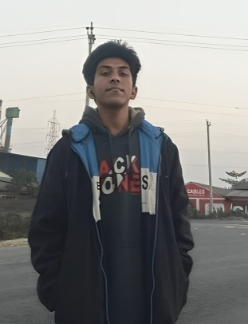

The next big thing in AI
will come from Fraziym & Akik.
Local-first autonomous AI — enterprise intelligence without surrendering your data, privacy, or control. One 19-year-old. One laptop. Three systems that shouldn't exist yet.
Not a wrapper. Not a chatbot.
Every AI startup in 2025 built a wrapper around GPT-4 and called it innovation. FRAZIYM built original systems — a sparse transformer that rewrites the math of how LLMs work, an autonomous agent that runs entirely air-gapped on your device, and a native compiler that emits x86-64 machine code by hand.
Original Research
XORZEN is not fine-tuned GPT. It's a from-scratch sparse adaptive architecture with HASS attention blocks, disk-sharded MoE, and Latent Chain-of-Thought — designed to do more with 90% fewer active parameters.
Truly Local
AXONIX-ZERO runs on your machine using your own models. Files don't leave your filesystem. Tokens don't leave your RAM. No telemetry. No cloud dependency. Full air-gap capability.
Radical Transparency
We show you the real build: beta status, what's broken, what's being fixed, what the roadmap actually is. No "GPT-5 level" claims. Just verified architecture, real test outputs, honest numbers.
Extreme Efficiency
XORZEN-277M achieves 3B–7B model quality at 26M active parameters per token. That's a 50× cost reduction. Not a projection — it's the verified architecture result from the current codebase.
Autonomous Loops
AXONIX-ZERO doesn't just answer questions. It plans, executes, verifies, and replans — up to 5 full autonomous cycles with loop detection, retry logic, and LLM-verified task completion.
Built Different
One 19-year-old in Dhaka, Bangladesh. Laptop CPU only. No VC, no GPU cluster, no team. Three systems built from scratch: a sparse AI framework, an autonomous agent, and a native x86-64 compiler. The work is real because the math is right.
Three systems. All shipping.
Built from scratch on a laptop CPU by one person. No VC. No GPU cluster. No team. Verified test outputs available on request.
AXONIX-ZERO
The autonomous engineering agent that runs entirely on your machine. You give it a goal — it plans, executes, verifies, debugs, and delivers. No cloud. No API keys needed. No data leaves your device.
XORZEN Framework
Sparse Adaptive Intelligence — a from-scratch LLM architecture that routes each token through only the compute it actually needs. 277M total parameters, 26M active per token. 90% sparsity at inference time.
Omnikarai
A hand-written programming language with a compiler that emits native Windows x64 machine code directly. No LLVM. No GCC backend. No intermediate representation. Every byte of the output binary is authored by the compiler — written entirely in C from scratch.
Your model. Your rules.
AXONIX-ZERO works with everything. One unified interface — your tools behave identically regardless of which backend is active.
Small team. Outsized output.
Three founders building FRAZIYM from the ground up — technical, strategic, and creative. One 19-year-old wrote the architecture. Two more turned it into a company.

Help train XORZEN on real GPUs
Architecture done. Code passes every test. Goal: $8,000 for a 3-month cloud GPU lease. No equity. Full transparency. Every update posted publicly.
Engineering transparency
is non-negotiable.
Request a demo to see the real build — warts, active fixes, and the full roadmap to production-grade stability.